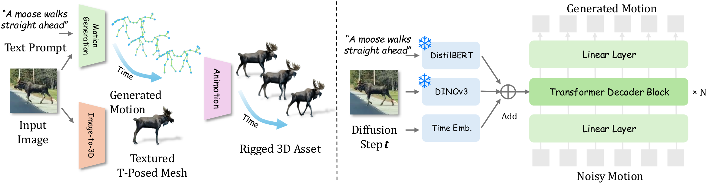
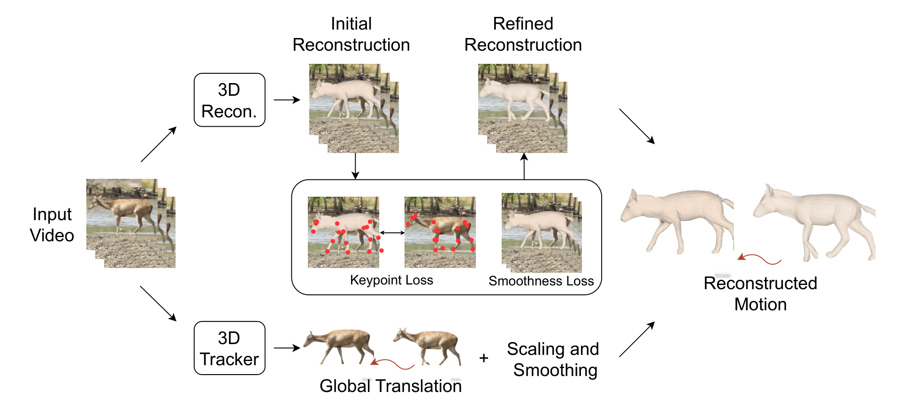
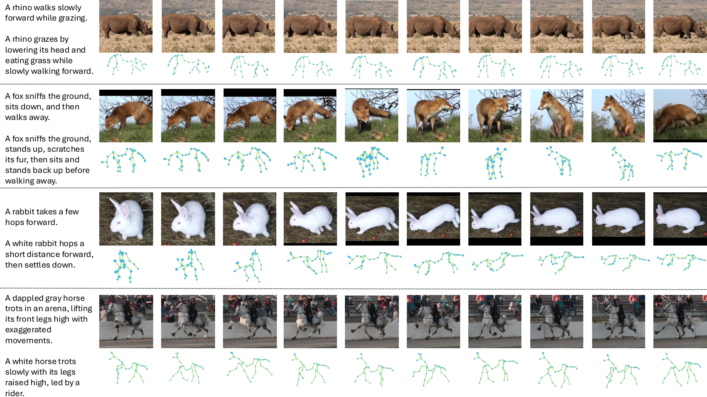
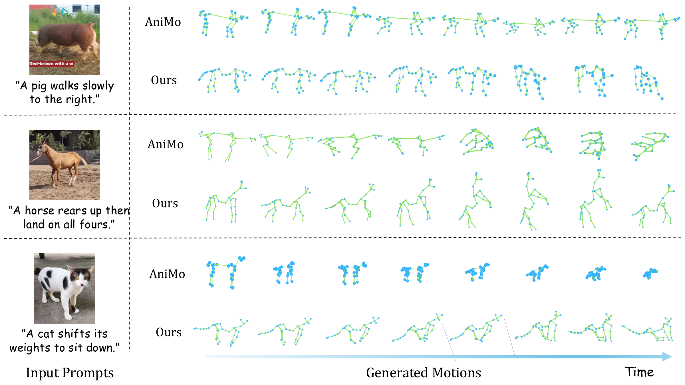
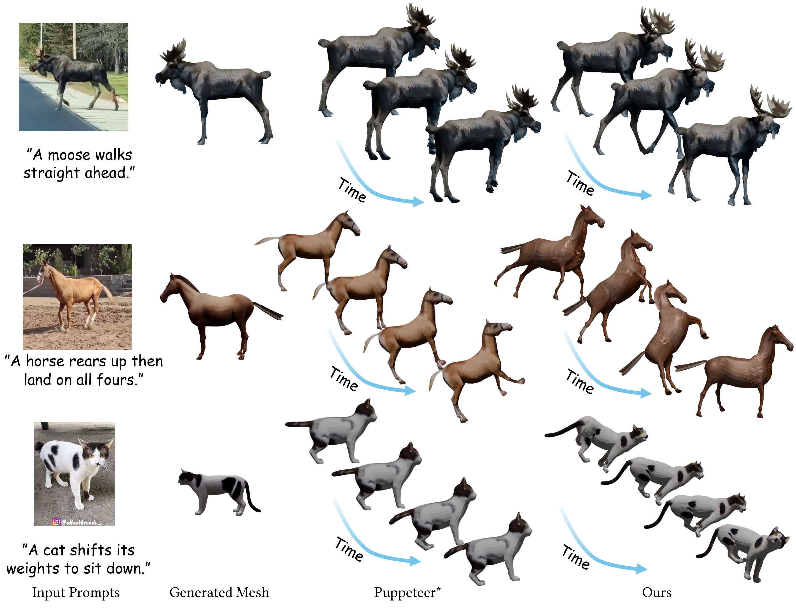

Kirin learns 3D quadruped motion directly from internet video — and turns a single image plus a text prompt into a fully rigged, animated mesh.
Given an animal image and a text description of the desired motion, Kirin produces a 3D animated mesh sequence — trained on motion reconstructed from in-the-wild video, with an automatic rigging step at the end.
A unified framework that reconstructs 3D motion from in-the-wild video, learns priors at scale on the resulting dataset, and generates realistic motion conditioned on text and image.
Understanding animal motion is fundamental to modeling behavior and biomechanics, yet progress has lagged far behind human motion research because high-quality data is scarce. Capturing motion in controlled environments is impractical for most species, leaving existing datasets small and domain-limited.
Kirin sidesteps capture entirely. We reconstruct 3D motion sequences from large collections of in-the-wild animal video, pair them with VLM-generated captions, and release AiM3D — the first large-scale dataset offering aligned video–text–motion tuples for quadrupeds. On top of it we train a visual-guided generation model that conditions on both text and image, then leverage an off-the-shelf image-to-3D model to automatically rig and animate the result, producing ready-to-render animated animals from a single picture.
A two-stage pipeline. A diffusion-based motion model conditioned on text and image generates the 3D motion; an automatic rigging module applies it to a T-posed mesh produced from the same image.


A large-scale animal motion dataset with aligned video, text, and 3D motion. Reconstructions cover diverse species, behaviours, and environments far beyond what controlled capture can offer.

Side-by-side qualitative comparisons of generated mesh and skeletal animation against the strongest published baseline. Drag to inspect; click pause to hold a frame.


 Right-click drag, or WASD to move
Right-click drag, or WASD to move Scroll to zoom
Scroll to zoom to pause
to pause

Across motion-generation metrics and 4D animation benchmarks, Kirin outperforms or matches prior methods. Best results in color; second-best underlined.
| Method | R-Prec. Top-1 ↑ | R-Prec. Top-3 ↑ | FID ↓ | MM-Dist ↓ | Diversity ↑ |
|---|---|---|---|---|---|
| Real motion | 0.512±.004 | 0.823±.003 | 0.002±.001 | 2.974±.008 | 9.503±.065 |
| MDM | 0.298±.005 | 0.612±.004 | 1.842±.040 | 4.918±.011 | 8.612±.078 |
| MotionDiffuse | 0.321±.004 | 0.658±.005 | 1.514±.034 | 4.671±.012 | 8.804±.080 |
| T2M-GPT | 0.354 | 0.701 | 1.288±.030 | 4.402 | 9.014 |
| MoMask | 0.346±.005 | 0.689±.004 | 1.196 | 4.477±.010 | 8.961±.071 |
| Kirin (text-only) | 0.392±.004 | 0.748±.003 | 0.974±.026 | 4.142±.009 | 9.182±.069 |
Even without image conditioning, Kirin's architecture trained on AiM3D outperforms the strongest text-to-motion baselines across all five standard metrics. Numbers reported on the AiM3D test split with 95% confidence intervals.
| Method | R-Prec. Top-1 ↑ | R-Prec. Top-3 ↑ | FID ↓ | MM-Dist ↓ | Image-CLIP ↑ |
|---|---|---|---|---|---|
| Real motion | 0.512±.004 | 0.823±.003 | 0.002±.001 | 2.974±.008 | 0.298±.003 |
| MDM + img | 0.331±.005 | 0.671±.004 | 1.487±.038 | 4.604±.011 | 0.221±.003 |
| MoMask + img | 0.378 | 0.722 | 1.041 | 4.291 | 0.247 |
| Kirin (full) | 0.421±.004 | 0.776±.003 | 0.812±.022 | 3.978±.010 | 0.281±.003 |
Conditioning on the input image alongside the text prompt — through a frozen DINOv3 encoder fused with text and time embeddings — yields the largest gains on FID and Image-CLIP, indicating that motion better matches the appearance and identity of the depicted animal.
| Method | CLIP-T ↑ | CLIP-I ↑ | Temporal Cons. ↑ | User Pref. ↑ |
|---|---|---|---|---|
| Animate124 | 0.218±.004 | 0.704±.005 | 0.812±.006 | 11.4 % |
| 4D-fy | 0.231±.004 | 0.728±.005 | 0.847±.005 | 14.8 % |
| Puppeteer* | 0.262 | 0.781 | 0.881 | 21.7 % |
| Kirin (ours) | 0.291±.003 | 0.812±.004 | 0.924±.004 | 52.1 % |
A user study with 38 participants comparing 24 prompt × image pairs from a held-out evaluation set; participants picked the most realistic animation per prompt. Kirin wins a majority of comparisons. * Reproduced; no public code at submission.
Bibliographic information will be finalised on release. A placeholder entry is shown below.
@misc{kirin2026,
title = {Kirin: Animal Motion Generation from In-the-Wild Video},
author = {Anonymous},
year = {2026},
note = {Preprint, under review}
}